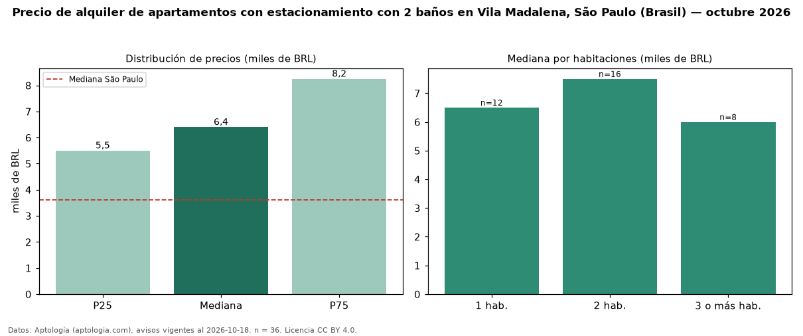

Precio de alquiler de apartamentos con estacionamiento con 2 baños en Vila Madalena, São Paulo (Brasil) — octubre 2026
Con 36 avisos vigentes, el canon mediano de apartamentos con estacionamiento con 2 baños en alquiler en Vila Madalena, São Paulo (Brasil) es BRL 6.400 al mes. Eso es 4 % más que la mediana de los apartamentos con estacionamiento en alquiler de Vila Madalena (BRL 6.150, n = 80); este segmento reúne el 45 % de esos avisos. Por metro cuadrado, la mediana es BRL 77,71/m² al mes (n = 36), 2 % por encima de los apartamentos con estacionamiento en alquiler de Vila Madalena (BRL 76,29/m²). El área mediana anunciada es 81 m². El segmento con más oferta es el de 2 habitaciones (16 avisos, mediana BRL 7.500); pasar de 1 habitación a 3 o más habitaciones cambia la mediana −8 %. La cuota de mantenimiento o condominio mediana declarada es BRL 1.667 al mes (n = 36), aparte del canon. La mediana de todos los apartamentos en alquiler de São Paulo es BRL 3.621 (+77 % de diferencia). La mitad central de los avisos va de BRL 5.500 a BRL 8.250 (razón 1,5), una dispersión moderada. Datos: Aptología (aptologia.com), CC BY 4.0 — https://www.aptologia.com/br/aluguel/sao-paulo. Archivos: PDF, CSV con las cifras y gráfica PNG.

| Avisos únicos | 36 |
|---|---|
| Percentil 25 | COP 5.500 |
| Mediana | COP 6.400 |
| Percentil 75 | COP 8.250 |
| Mediana por m² | COP 77 |
Fuente: avisos vigentes de portales inmobiliarios recopilados por Aptología, deduplicados (mínimo 30 avisos únicos por celda). Precios pedidos, no cerrados. Fecha: 2026-10-18.